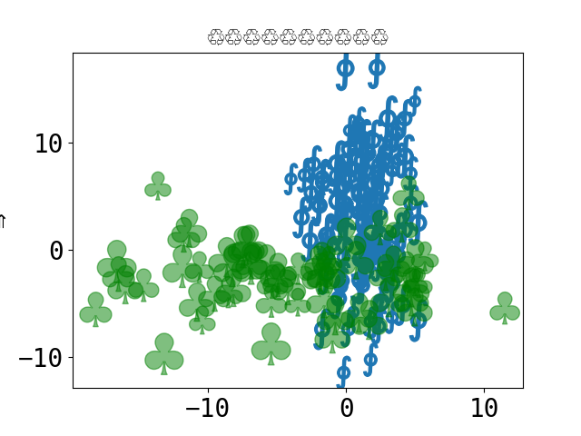

Note
Click here to download the full example code or to run this example in your browser via Binder
Using Unicode everywhere 🤗¶
This example demonstrates how to include non-ASCII characters, mostly emoji 🎉 to stress test the build and test environments that parse the example files.
from __future__ import unicode_literals
# 🎉 👍
# Code source: Óscar Nájera
# License: BSD 3 clause
import numpy as np
import matplotlib.pyplot as plt
plt.rcParams['font.size'] = 20
plt.rcParams["font.monospace"] = ["DejaVu Sans Mono"]
plt.rcParams["font.family"] = "monospace"
plt.figure()
x = np.random.randn(100) * 2 + 1
y = np.random.randn(100) * 6 + 3
s = np.random.rand(*x.shape) * 800 + 500
plt.scatter(x, y, s, marker=r'$\oint$')
x = np.random.randn(60) * 7 - 4
y = np.random.randn(60) * 3 - 2
s = s[:x.size]
plt.scatter(x, y, s, alpha=0.5, c='g', marker=r'$\clubsuit$')
plt.xlabel('⇒')
plt.ylabel('⇒')
plt.title('♲' * 10)
print('Std out capture 😎')
# To avoid matplotlib text output
plt.show()

Out:
Std out capture 😎
Debug fonts
print(plt.rcParams)
Out:
_internal.classic_mode: False
agg.path.chunksize: 0
animation.bitrate: -1
animation.codec: h264
animation.convert_args: ['-layers', 'OptimizePlus']
animation.convert_path: convert
animation.embed_limit: 20.0
animation.ffmpeg_args: []
animation.ffmpeg_path: ffmpeg
animation.frame_format: png
animation.html: none
animation.writer: ffmpeg
axes.autolimit_mode: data
axes.axisbelow: line
axes.edgecolor: black
axes.facecolor: white
axes.formatter.limits: [-5, 6]
axes.formatter.min_exponent: 0
axes.formatter.offset_threshold: 4
axes.formatter.use_locale: False
axes.formatter.use_mathtext: False
axes.formatter.useoffset: True
axes.grid: False
axes.grid.axis: both
axes.grid.which: major
axes.labelcolor: black
axes.labelpad: 4.0
axes.labelsize: medium
axes.labelweight: normal
axes.linewidth: 0.8
axes.prop_cycle: cycler('color', ['#1f77b4', '#ff7f0e', '#2ca02c', '#d62728', '#9467bd', '#8c564b', '#e377c2', '#7f7f7f', '#bcbd22', '#17becf'])
axes.spines.bottom: True
axes.spines.left: True
axes.spines.right: True
axes.spines.top: True
axes.titlecolor: auto
axes.titlelocation: center
axes.titlepad: 6.0
axes.titlesize: large
axes.titleweight: normal
axes.titley: None
axes.unicode_minus: True
axes.xmargin: 0.05
axes.ymargin: 0.05
axes.zmargin: 0.05
axes3d.grid: True
axes3d.xaxis.panecolor: (0.95, 0.95, 0.95, 0.5)
axes3d.yaxis.panecolor: (0.9, 0.9, 0.9, 0.5)
axes3d.zaxis.panecolor: (0.925, 0.925, 0.925, 0.5)
backend: agg
backend_fallback: False
boxplot.bootstrap: None
boxplot.boxprops.color: black
boxplot.boxprops.linestyle: -
boxplot.boxprops.linewidth: 1.0
boxplot.capprops.color: black
boxplot.capprops.linestyle: -
boxplot.capprops.linewidth: 1.0
boxplot.flierprops.color: black
boxplot.flierprops.linestyle: none
boxplot.flierprops.linewidth: 1.0
boxplot.flierprops.marker: o
boxplot.flierprops.markeredgecolor: black
boxplot.flierprops.markeredgewidth: 1.0
boxplot.flierprops.markerfacecolor: none
boxplot.flierprops.markersize: 6.0
boxplot.meanline: False
boxplot.meanprops.color: C2
boxplot.meanprops.linestyle: --
boxplot.meanprops.linewidth: 1.0
boxplot.meanprops.marker: ^
boxplot.meanprops.markeredgecolor: C2
boxplot.meanprops.markerfacecolor: C2
boxplot.meanprops.markersize: 6.0
boxplot.medianprops.color: C1
boxplot.medianprops.linestyle: -
boxplot.medianprops.linewidth: 1.0
boxplot.notch: False
boxplot.patchartist: False
boxplot.showbox: True
boxplot.showcaps: True
boxplot.showfliers: True
boxplot.showmeans: False
boxplot.vertical: True
boxplot.whiskerprops.color: black
boxplot.whiskerprops.linestyle: -
boxplot.whiskerprops.linewidth: 1.0
boxplot.whiskers: 1.5
contour.algorithm: mpl2014
contour.corner_mask: True
contour.linewidth: None
contour.negative_linestyle: dashed
date.autoformatter.day: %Y-%m-%d
date.autoformatter.hour: %m-%d %H
date.autoformatter.microsecond: %M:%S.%f
date.autoformatter.minute: %d %H:%M
date.autoformatter.month: %Y-%m
date.autoformatter.second: %H:%M:%S
date.autoformatter.year: %Y
date.converter: auto
date.epoch: 1970-01-01T00:00:00
date.interval_multiples: True
docstring.hardcopy: False
errorbar.capsize: 0.0
figure.autolayout: False
figure.constrained_layout.h_pad: 0.04167
figure.constrained_layout.hspace: 0.02
figure.constrained_layout.use: False
figure.constrained_layout.w_pad: 0.04167
figure.constrained_layout.wspace: 0.02
figure.dpi: 100.0
figure.edgecolor: white
figure.facecolor: white
figure.figsize: [6.4, 4.8]
figure.frameon: True
figure.hooks: []
figure.labelsize: large
figure.labelweight: normal
figure.max_open_warning: 20
figure.raise_window: True
figure.subplot.bottom: 0.11
figure.subplot.hspace: 0.2
figure.subplot.left: 0.125
figure.subplot.right: 0.9
figure.subplot.top: 0.88
figure.subplot.wspace: 0.2
figure.titlesize: large
figure.titleweight: normal
font.cursive: ['Apple Chancery', 'Textile', 'Zapf Chancery', 'Sand', 'Script MT', 'Felipa', 'Comic Neue', 'Comic Sans MS', 'cursive']
font.family: ['monospace']
font.fantasy: ['Chicago', 'Charcoal', 'Impact', 'Western', 'Humor Sans', 'xkcd', 'fantasy']
font.monospace: ['DejaVu Sans Mono']
font.sans-serif: ['DejaVu Sans', 'Bitstream Vera Sans', 'Computer Modern Sans Serif', 'Lucida Grande', 'Verdana', 'Geneva', 'Lucid', 'Arial', 'Helvetica', 'Avant Garde', 'sans-serif']
font.serif: ['DejaVu Serif', 'Bitstream Vera Serif', 'Computer Modern Roman', 'New Century Schoolbook', 'Century Schoolbook L', 'Utopia', 'ITC Bookman', 'Bookman', 'Nimbus Roman No9 L', 'Times New Roman', 'Times', 'Palatino', 'Charter', 'serif']
font.size: 20.0
font.stretch: normal
font.style: normal
font.variant: normal
font.weight: normal
grid.alpha: 1.0
grid.color: #b0b0b0
grid.linestyle: -
grid.linewidth: 0.8
hatch.color: black
hatch.linewidth: 1.0
hist.bins: 10
image.aspect: equal
image.cmap: viridis
image.composite_image: True
image.interpolation: antialiased
image.lut: 256
image.origin: upper
image.resample: True
interactive: False
keymap.back: ['left', 'c', 'backspace', 'MouseButton.BACK']
keymap.copy: ['ctrl+c', 'cmd+c']
keymap.forward: ['right', 'v', 'MouseButton.FORWARD']
keymap.fullscreen: ['f', 'ctrl+f']
keymap.grid: ['g']
keymap.grid_minor: ['G']
keymap.help: ['f1']
keymap.home: ['h', 'r', 'home']
keymap.pan: ['p']
keymap.quit: ['ctrl+w', 'cmd+w', 'q']
keymap.quit_all: []
keymap.save: ['s', 'ctrl+s']
keymap.xscale: ['k', 'L']
keymap.yscale: ['l']
keymap.zoom: ['o']
legend.borderaxespad: 0.5
legend.borderpad: 0.4
legend.columnspacing: 2.0
legend.edgecolor: 0.8
legend.facecolor: inherit
legend.fancybox: True
legend.fontsize: medium
legend.framealpha: 0.8
legend.frameon: True
legend.handleheight: 0.7
legend.handlelength: 2.0
legend.handletextpad: 0.8
legend.labelcolor: None
legend.labelspacing: 0.5
legend.loc: best
legend.markerscale: 1.0
legend.numpoints: 1
legend.scatterpoints: 1
legend.shadow: False
legend.title_fontsize: None
lines.antialiased: True
lines.color: C0
lines.dash_capstyle: butt
lines.dash_joinstyle: round
lines.dashdot_pattern: [6.4, 1.6, 1.0, 1.6]
lines.dashed_pattern: [3.7, 1.6]
lines.dotted_pattern: [1.0, 1.65]
lines.linestyle: -
lines.linewidth: 1.5
lines.marker: None
lines.markeredgecolor: auto
lines.markeredgewidth: 1.0
lines.markerfacecolor: auto
lines.markersize: 6.0
lines.scale_dashes: True
lines.solid_capstyle: projecting
lines.solid_joinstyle: round
markers.fillstyle: full
mathtext.bf: sans:bold
mathtext.cal: cursive
mathtext.default: it
mathtext.fallback: cm
mathtext.fontset: dejavusans
mathtext.it: sans:italic
mathtext.rm: sans
mathtext.sf: sans
mathtext.tt: monospace
patch.antialiased: True
patch.edgecolor: black
patch.facecolor: C0
patch.force_edgecolor: False
patch.linewidth: 1.0
path.effects: []
path.simplify: True
path.simplify_threshold: 0.111111111111
path.sketch: None
path.snap: True
pcolor.shading: auto
pcolormesh.snap: True
pdf.compression: 6
pdf.fonttype: 3
pdf.inheritcolor: False
pdf.use14corefonts: False
pgf.preamble:
pgf.rcfonts: True
pgf.texsystem: xelatex
polaraxes.grid: True
ps.distiller.res: 6000
ps.fonttype: 3
ps.papersize: letter
ps.useafm: False
ps.usedistiller: None
savefig.bbox: None
savefig.directory: ~
savefig.dpi: figure
savefig.edgecolor: auto
savefig.facecolor: auto
savefig.format: png
savefig.orientation: portrait
savefig.pad_inches: 0.1
savefig.transparent: False
scatter.edgecolors: face
scatter.marker: o
svg.fonttype: path
svg.hashsalt: None
svg.image_inline: True
text.antialiased: True
text.color: black
text.hinting: force_autohint
text.hinting_factor: 8
text.kerning_factor: 0
text.latex.preamble:
text.parse_math: True
text.usetex: False
timezone: UTC
tk.window_focus: False
toolbar: toolbar2
webagg.address: 127.0.0.1
webagg.open_in_browser: True
webagg.port: 8988
webagg.port_retries: 50
xaxis.labellocation: center
xtick.alignment: center
xtick.bottom: True
xtick.color: black
xtick.direction: out
xtick.labelbottom: True
xtick.labelcolor: inherit
xtick.labelsize: medium
xtick.labeltop: False
xtick.major.bottom: True
xtick.major.pad: 3.5
xtick.major.size: 3.5
xtick.major.top: True
xtick.major.width: 0.8
xtick.minor.bottom: True
xtick.minor.pad: 3.4
xtick.minor.size: 2.0
xtick.minor.top: True
xtick.minor.visible: False
xtick.minor.width: 0.6
xtick.top: False
yaxis.labellocation: center
ytick.alignment: center_baseline
ytick.color: black
ytick.direction: out
ytick.labelcolor: inherit
ytick.labelleft: True
ytick.labelright: False
ytick.labelsize: medium
ytick.left: True
ytick.major.left: True
ytick.major.pad: 3.5
ytick.major.right: True
ytick.major.size: 3.5
ytick.major.width: 0.8
ytick.minor.left: True
ytick.minor.pad: 3.4
ytick.minor.right: True
ytick.minor.size: 2.0
ytick.minor.visible: False
ytick.minor.width: 0.6
ytick.right: False
Total running time of the script: ( 0 minutes 0.252 seconds)

Download Python source code: plot_5_unicode_everywhere.py